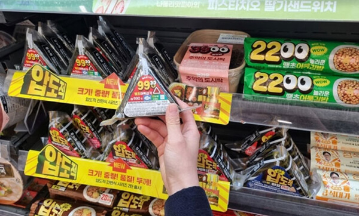

편의점김밥 — 편의점 인기 한 끼
CU·GS25·세븐일레븐 냉장 코너의 김밥은 관광 중 간단한 한 끼로 자주 고릅니다. 참치·제육·치즈 등 맛이 다양하고, 전자레인지용 제품도 많아요.
팁
유통기한과 ‘전자레인지 가능’ 표시를 확인하세요. 아침·심야에는 인기 맛이 품절될 수 있습니다.

CU·GS25·세븐일레븐 냉장 코너의 김밥은 관광 중 간단한 한 끼로 자주 고릅니다. 참치·제육·치즈 등 맛이 다양하고, 전자레인지용 제품도 많아요.
유통기한과 ‘전자레인지 가능’ 표시를 확인하세요. 아침·심야에는 인기 맛이 품절될 수 있습니다.